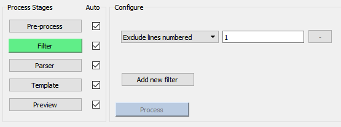
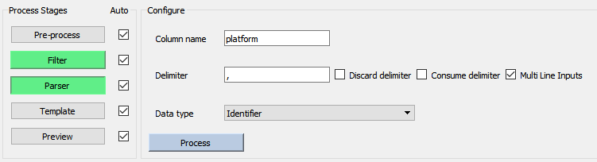
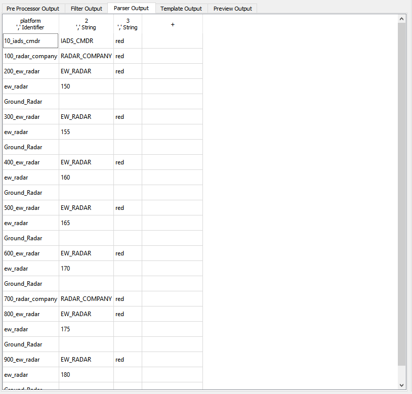
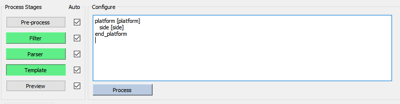
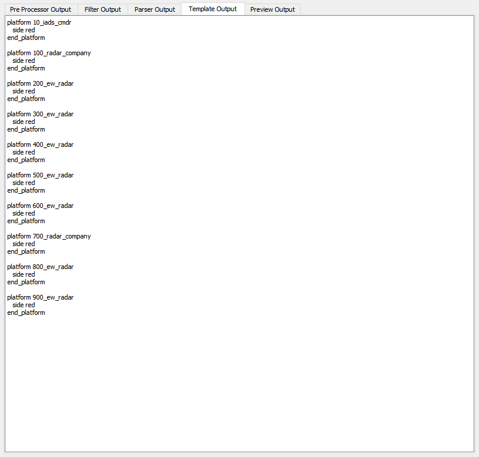

Scenario Importer Stages¶
Using the Scenario Importer is mostly comprised of working through the stages. For all but the preview stage, an input and output panel below the configuration settings display the data before and after the stage has processed them. If the user has specified that a stage process changes automatically, then changes can been seen live in order to check ones work.
Pre-Process Stage¶

The pre-processing stage gives the user the opportunity to use a predefined outside processing program to modify their input into a readable state for the Scenario Importer. This is an optional step, but may be required if the data to be read in needs to be altered before subsequent stages are run.
Filter Stage¶
The filter stage allows the user to remove unwanted data from their input for each line. These filteres include: - Text matching filters, to filter for or against certain text patterns from the input data. - Line number filters, to filter for or against specific lines of input, in blocks or individually.
Parser Stage¶
 The parser configuration panel has a set of data for each column of data that is created in the output panel. Types of valid inputs are:
Column Name: The name to call to retrieve data captured by a particular column when formatting.
Delimiter: The delimiter to parse for when capturing data for a particular column, defaults to a comma.
Discard option: Sets whether the delimiter will be kept within captured entries.
Consume option: Sets whether it will be kept in the current column, or pushed to the next ones.
Multi line inputs: A global setting used to capture input platforms whose fields span multiple lines.
Data type: Can be set to allow the parser to validate the entries found in the column as the expected type, numeric or other.
An example of putting together a parsing table is provided in the demo
Columns are created in the output panel directly, and we can view the settings for name, delimiter, and data type of each column in the header of the table. Select the header entry to edit the configuration of any column.
Template Stage¶
 The template stage allows the user to format data which was captured and validated by the parser into AFSIM readable scenario files. The Scenario Importer will interpret any input tokens enclosed by square brackets on a platform by platform basis, where tokens can be fields stored in the input table or functions to manipulate data. The available functions are found below, and demonstrated in the Scenario Importer demo
Template Input |
Interpreted Output |
|---|---|
[token] |
Prints the entry found in the column named “token” for each entry |
if ([token] ) { output } |
Prints the formatted output for each entry only if that entry has something stored for the token |
if ( [token] == value ) {}, also valid for <, >, !=, etc. |
Interprets whether the comparison should be numeric based on the type of the token and the value, and prints output if the comparison is found to be true |
random (start, end) |
Prints a random value, truncated to 6 decimal places, between start and end |
translate (heading, distance, latitude, longitude) |
Given a valid lat / long coordinate pair, print the coordinate pair translated distance in direction heading, given in degrees from north. |
toUpper([token]) toLower([token]) toUpper([token], length) toLower([token], length) |
Functions which change the case of the input token. When provided with a length, only changes the case of length characters; negative lengths change case right to left. |
All of the functions above need to be contained within square brackets in order to be interpreted by the Scenario Importer, otherwise functions are passed as-is so that AFSIM script can be written into the importer. This syntax can be seen in the demo
If the template stage is set to process changes automatically, one can check the formatted output file update live with each change.
Note
Similar to writing a scenario file, in order to see any formatting errors within a block of template text the conditional must be closed. It is helpful to close conditionals before filling in their output statements for this reason, similar closing platform definitions with the end_platform command when developing scenarios.
Preview Stage¶

The preview stage allows user to view the formatted output they have created before saving it. There is an option to save output to multiple files sorted by a user-specified token such as platform side , category, or group.
When the desired output file(s) are visible in the preview stage, and no errors exist, the user is now able to save output and optionally save current Importer settings to speed up future uses of the Importer.